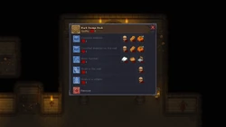

Sacrifice Zone
| This article is a stub. You can help Graveyard Keeper Wiki by expanding it. |
| Sacrifice Zone | |
|---|---|
 | |
Location information
| |
Buildable
|
True |
Npcs
| |
| Snake on | |

Area before the stairs down to the Dungeon, unlocked after providing Snake with the Active key. Area for building cult statues measured with  quality. After completing the quest for Snake bringing him the
quality. After completing the quest for Snake bringing him the
Necronomicon, there is a quest to reach  20 for a ritual. After having built the blood fountains, it is possible to fill them with 10×
20 for a ritual. After having built the blood fountains, it is possible to fill them with 10×
blood, adding +3  to the rating each.
to the rating each.
Work stations
 Dark design desk Dark design desk
| ||||
|---|---|---|---|---|
| Blueprint | Rating | Materials | Notes | Size |
| Crucified skeleton |
2 |
1× Skull, 2× Wooden beam, 1× Pumpkin |
Room for 2 | 2x3 |
| Crucified skeleton on the wall |
1 |
1× Skull, 2× Wooden beam, 1× Pumpkin |
Room for 2 | 1x3 |
| Blood fountain |
2 |
5× A polished brick of stone, 5× Polishing paste, 1× Stone repair kit |
+3 Room for 2 |
6x6 with two corners missing |
| Skulls in the wall |
1 |
5× Skull |
Room for 2 | 1x3 |
| Skulls in a column |
1 |
5× Skull |
Room for 2 | |
| |||||